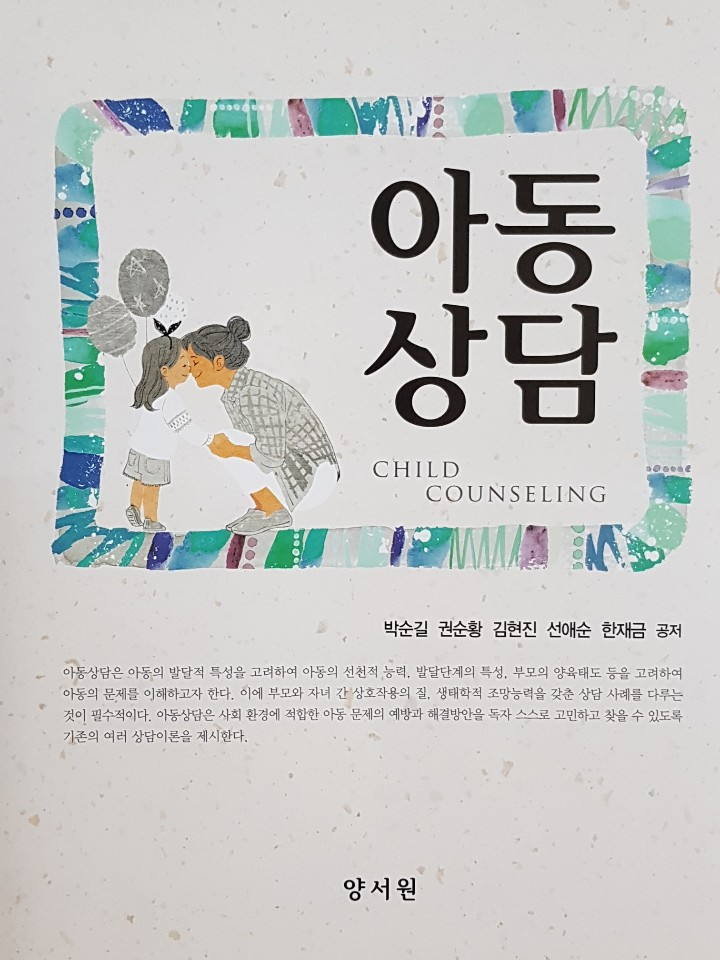

프로이드의 성격의 구조 3가지
프로이드의 저서 ‘자아와 원초아(The Ego and Id)’에서 인간의 성격은 원초아(id)， 자아(ego), 초자아(superego)에 의해 작동된다고 주장하였다. 이 3가지 중 원초아(id)는 생물학적 구성 요소의 충동을 의미하고, 자아(ego)는 심리적 구성 요소의 행동을 의미하며, 초자아(superego)는 사회적, 도덕적 구성 요소의 통제를 기능한다. 각 요소는 끊임없이 상호작용하면서 발휘 능력에 따라 인강의 행동 특성을 결정시킨다.
원초아
원초아(id)는 생물학적 구성으로 성격의 핵심이며, 완전히 무의식으로 되어있다. 현실과 관련은 없지만 계속해서 본능의 욕구를 만족시켜 긴장을 줄이려는 특징이 있다.
원초아는 싫은 것이나 해야 할 일은 회피하고, 이기적이고 즉각적인 만족을 추구하는 쾌락 원리(pleasure principle)에 지배 받는다.
원초아는 생물학적 반사 및 충동, 본능 등으로 끊임없이 긴장과 불쾌감을 해소하려든다. 현실에서 원초아는 억압(방어)된 욕구들로 비록 실행은 못하였지만 무의식 속에 숨겨진 채로 사람들의 삶에 영향을 미친다.
원초아는 정신 에너지가 솟아나는 만족감의 원천이 될 수 있어서 필요할 때 공격할 수도 있고 자기주장을 할 수 있다.
이러한 욕구는 직접적으로 만족할 때 쾌감이 온다. 반면 만족이 지연되거나 욕구 충족이 과도하게 억압당하면 심리적으로 아주 강한 긴장이나 불쾌감을 경험하게 된다.
이러한 원초아는 욕망 실현을 위한 사고 능력은 없으나 다른 욕망 충족을 소망하고 그것을 위해 무의식적으로 움직이면서 이루어진다.
자아
자아(ego)는 심리적 구성요소로써 현실원리(reality principle)의 지배를 받는다. 자아는 원초아의 욕구와 초자아의 양심 사이에서 갈등을 현실적으로 해결하는 역할을 한다.
자아는 현실과 환경을 고려하여 의식적, 합리적으로 욕구충족을 지연시키거나 다른 것으로 대처하여 적응한다.
자아는 원초아와 초자아의 맹목적이고 비이성적인 요구를 외부세계의 요구와 맞추려고 끊임없이 노력한다.
성숙한 자아는 원초아를 통제할 수 있지만 원초아에 의존하는 나약하고 불안한 자아는 자신을 방어하거나 보호하는 수단으로 억압이나 여러 가지 방어기제(defense mechanism)를 사용하여 현실을 벗어나려고 한다.
이러한 방어기제는 무의식적 갈등으로 인한 불안을 감소시키기 위하여 자아가 발달시키는 기능이기 때문에 대부분 여러 가지 방어기제를 함께 사용하여 현실을 벗어나려고 한다.
초자아
초자아(superego)는 사회적 구성요소로써 전의식과 무의식으로 되어 있고, 성격의 도덕과 이상 원칙을 따른다. 초자아는 인간의 도덕적인 원리(Moral principle)에 의해 지배된다.
초자아는 양심과 우리가 어떻게 행동해야 할지를 말해주는 자아 이상으로 되어 있다.
신생아는 원초아만 있지만 발달단계에 따라 자아와 초자아를 형성해 간다.
초자아는 성장과정에서 무엇이 옳고 그른지, 어떤 일을 해야 하고, 어떤 일을 하지 말아야 하는지 등을 부모의 가치관이나 사회적인 규칙 등을 받아들임으로써 도덕과 양심이 형성된다.
특히 부모의 양육방식이 비합리적이고 지나치게 엄할 경우 아동은 자신의 내면에 엄격해진다. 또한 가혹한 부모가 내재화(internalize)가 되어 자아를 적대시하면서 행동을 위축하고, 완벽주의에 빠지거나 우울한 성격이 된다.
이러한 초자아는 도덕이나 가치에 위배되는 원초아의 욕망과 충동을 조절하며, 이상적인 목표로 유도하는 기능을 한다.
불안
개인의 성격은 원초아, 자아, 초자아의 조화로 이루어지는데, 이 요인들 간의 갈등이 발생할 때 불안이 생긴다.
불안(anxiety)은 원인에 대한 명확한 대상 없이 두려움을 가지는 것이다.
프로이드는 원초아, 자아, 초자아의 갈등이 불안을 가져오는 것으로 인식한다.
성격구조의 자아는 현실감을 갖고 원초아와 초자아를 조정하여 현실에 충실하고자 한다
그렇지만 갈등이 야기되면 현실 불안, 신경증적 불안, 도덕적 불안 등 불안문제가 발생한다. 이러한 불안을 통제하기 위해 다양한 방어기제를 사용하게 된다. 또한 방어기제가 너무 강화된 경우 강박증이나 공포증 등 신경 증상이 나타난다.
1) 현실 불안
현실 불안(reality anxiety)은 현실적인 실제의 위험에 대한 인식의 기능을 의미한다. 어떤 부분에 존재하는 위험을 인지했을 때 받는 고통스러운 감정적 경험으로 느끼는 불안이다. 문제에 적절히 대처할 수 있는 현재의 불안이 너무 강해서 저절로 두려워하게 되는 경우이다. 현실에서 어떤 처벌이나 제재를 받은 경험으로 인하여 이러한 충동이 지각되기만 하여도 불안감을 느끼게 되는 것이다.
2) 신경증적 불안
신경증적 불안(neurotic anxiety)은 불안을 느껴야할 이유가 없는데도 자아가 본능적으로부터 오는 위험성을 통제하지 못해 위험이 생길 것이라는 불안에 사로잡히는 경우이다. 신경증적 불안 상태는 위험이 전혀 영향을 주지 않거나 사소한 역할만 담당했는데도 발생하는 기대 불안과 공포증이 있다. 모든 가능성을 끔직한 쪽으로 예상하며 우연을 불길한 조짐으로 해석하고 부정적으로 생각한다.
3) 도덕적 불안
도덕적 불안(moral anxiety)은 자아 속에 죄책감 또는 부끄러움으로 느껴지게 되는 양심으로부터 오는 위험을 인지할 때에 일어나는 불안이다. 원초아의 충동이 부도덕한 방식으로 충족을 얻으려고 할 때에 죄책감이나 수치심을 통한 초자아의 처벌 위협을 느낀다. 신경 내부의 구조에서 비롯되는 것으로 자아는 불안을 다스리기 위한 죄악감, 자기저주의 감정으로 반응할 때 자신의 경험을 왜곡하거나 위장하는 여러 가지 방어기제를 사용한다. 이 불안은 초자아의 완벽한 명령을 행하거나 생각할 경우 벌을 받으리라는 객관적인 두려움에서 기인한다.
출처: 박순길 외 공저(2017). 아동상담 3장 정신분석 상담의 주요 이론 중에서

2021.11.28 - [분류 전체보기] - 프로이드의 발달 이론- 심리성적 발달 5단계
프로이드의 발달 이론- 심리성적 발달 5단계
심리성적 발달 5단계 프로이드(Sigmund Freud)는 성격발달 과정에서 중요한 영향을 미치는 성 에너지인 리비도의 과잉 및 충족 또는 좌절 및 고착에 따라 성격발달에 중요한 영향을 미친다고 주장
think-sis.tistory.com